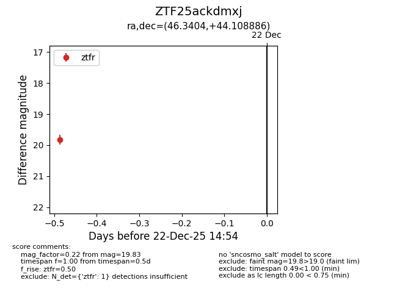
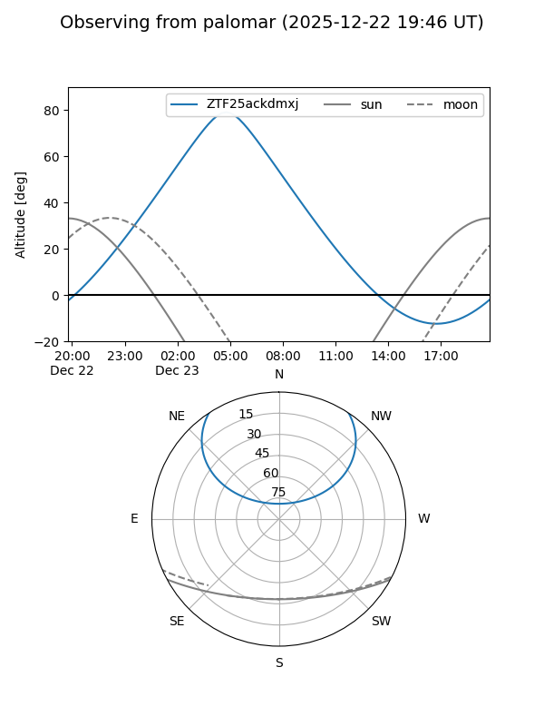

ZTF25ackdmxj
Target ZTF25ackdmxj at 2025-12-22 14:56
Aliases and brokers:
FINK: fink-portal.org/ZTF25ackdmxj
Lasair: lasair-ztf.lsst.ac.uk/objects/ZTF25ackdmxj
ALeRCE: alerce.online/object/ZTF25ackdmxj
alt names
ZTF25ackdmxj (ztf,fink_ztf)
Coordinates:
equatorial (ra, dec) = 46.3404,+44.10889
equatorial (HMS+DMS) = 03:05:21.69,+44:06:31.99
galactic (l, b) = (146.8633,-12.45179)
Flags:
Photometry:
last ztfr=19.83
1 ztfr detections
Lightcurve

Visibility


Additional plots